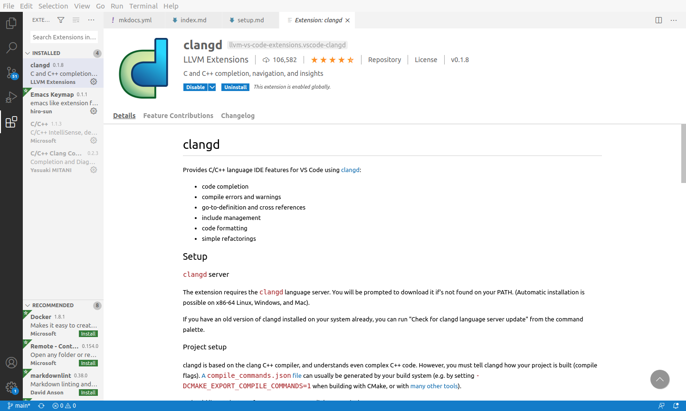
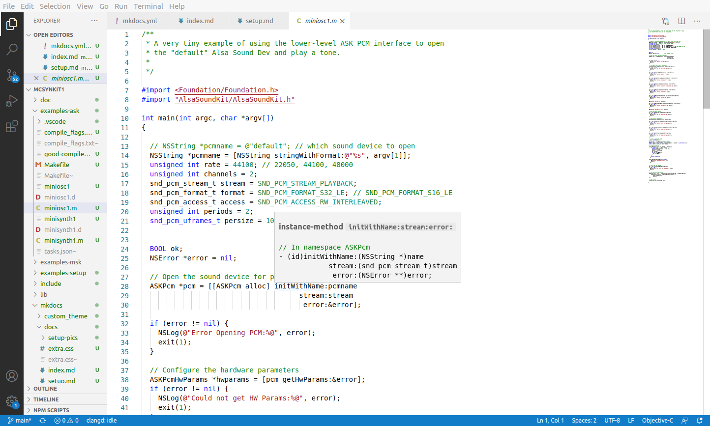
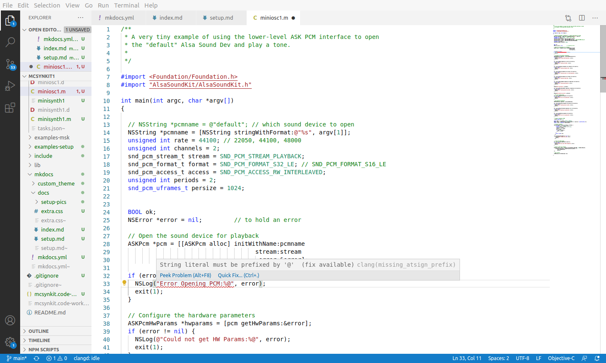
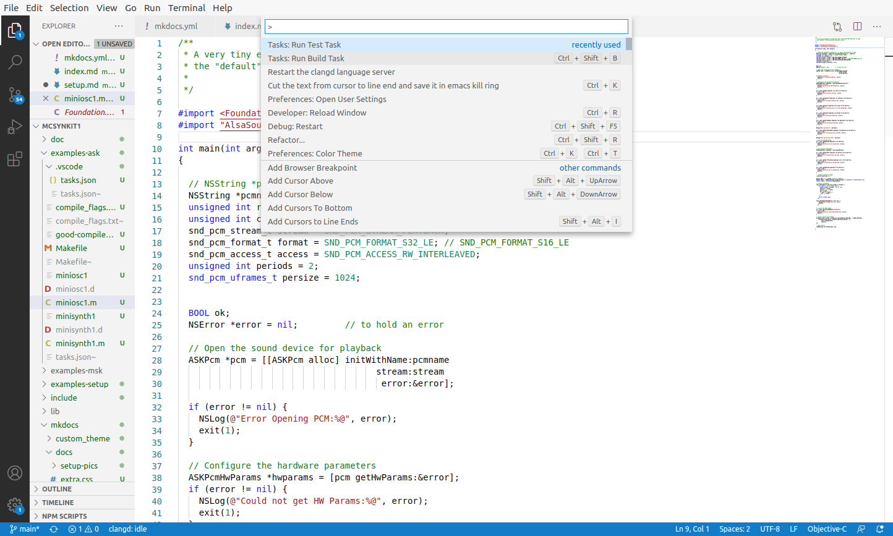
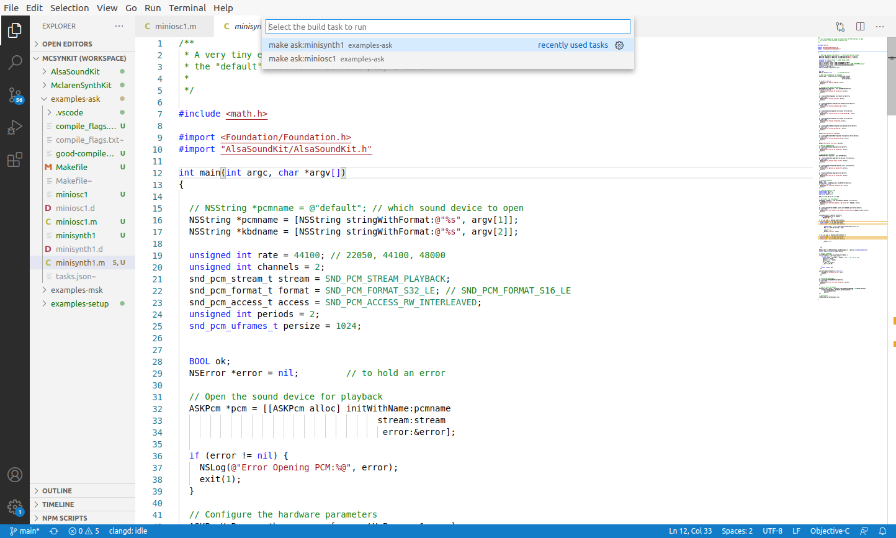
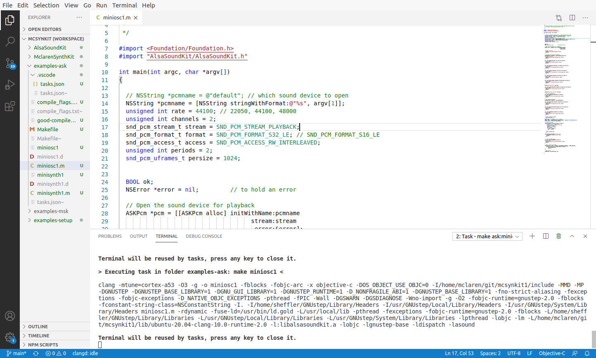
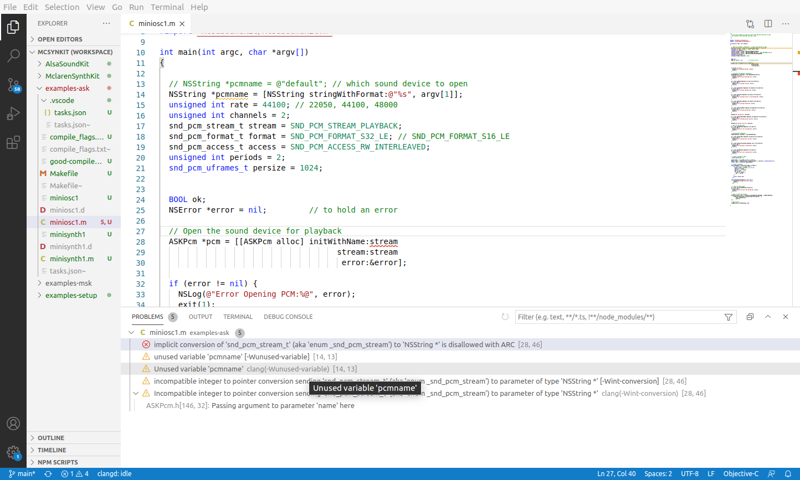
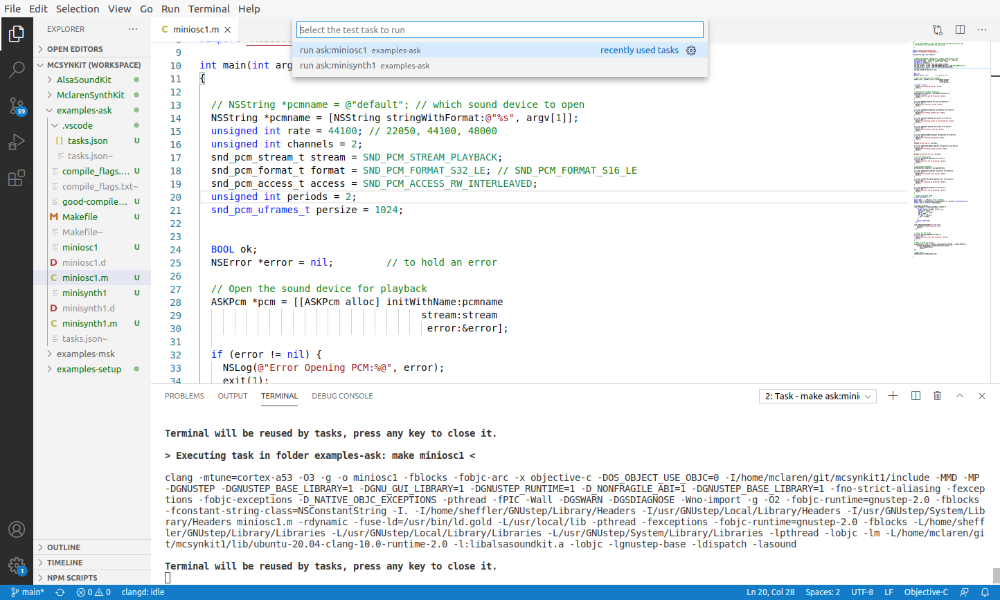
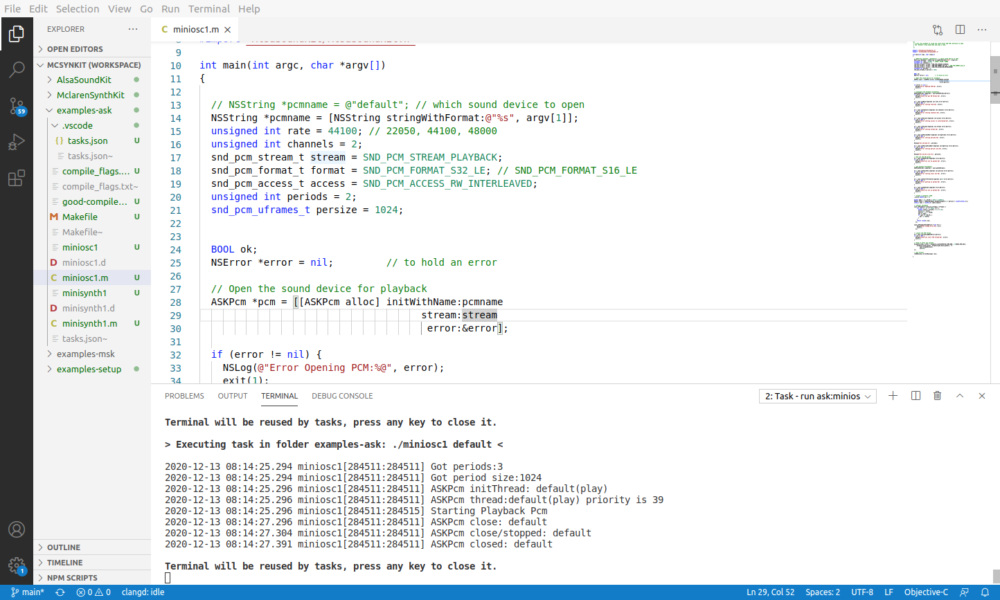

Setting up your Environment
This chapter describes how to install some of the things that make a modern Objective-C environment an enjoyable experience on Linux. We'll go over the following things:
- installing GNUstep
- installing VSCode
Install GNUstep
The Objective-C programming environment needs its supporting libraries and development headers to be useful and complete. These are provided by GNUstep. The modern dialect of Objective-C is supported by libobjc2 and can make use of libdispatch from Apple for concurrency.
The easiest way to install and build GNUstep is with scripts in the following repository:
These scripts automate the entire process of first installing the dependencies of the GNUstep environment, downloading the necessary repositories from Github and building everything.
First, download the build repo.
$ mkdir ~/git
$ cd ~/git
$ git clone https://github.com/plaurent/gnustep-build
Then, make a new directory to perform the build in.
$ cd ~
$ mkdir gbuild
In the directory you just made, run the build command corresponding to your Operating System.
$ cd gbuild
$ ~/git/gnustep-build/ubuntu-20.10-clang-11.0-runtime-2.0/GNUstep-buildon-ubuntu2010.sh
After about 20 minutes on a fast laptop with a good connection, you'll have a complete GNUstep development environment. The installation script writes a modification to your .bashrc so that new terminals get the proper environment variables configured. Open up a new `xterm and see if it's installed.
$ clang -v
$ gnustep-config --help
A Minimal ObjC program
If you're new to Objective-C on Linux, try compiling this tiny program to see if everything is working correctly.
#import <Foundation/Foundation.h>
#import <dispatch/dispatch.h>
int main(int argc, char *argv[], char **env)
{
NSLog(@"Hello World!\n");
NSString *greeting = @"Hello from a dispatch event";
dispatch_time_t delay = dispatch_time(DISPATCH_TIME_NOW, 2.0*NSEC_PER_SEC);
dispatch_after(delay, dispatch_get_global_queue(0,0), ^(void) {
NSLog(@"dispatch: %@", greeting);
exit(0);
});
[[NSRunLoop mainRunLoop] run];
}
Then, to compile it use gnustep-config to pick up all of the flags the compiler needs for GNUstep base libraries. But note, we still have to specify libdispatch explicitly.
$ clang -o objctest1 `gnustep-config --objc-flags` `gnustep-config --base-libs` objctest1.m -ldispatch
This program is available in the ../examples-setup directory along with a Makefile.
Install VSCode
VSCode (or just code as it is known https://code.visualstudio.com/ has good support for Obj-C out of the box. But it is when it is combined with clang and clangd it really shines! With clangd, the compiler is run continuously against your code changes. You get context-aware completions and the ability to locate functions and variables across files in your workspace.
To do this well, there is a little bit of configuration that needs to happen in the project to tell the background-compiler how to run. But we'll describe all of that here a little later.
But first: install code by downloading from the site.
Avoid the SNAP version of VSCode!
On Ubuntu, a Snap is a self-contained installation unit that contains a program and all of its dependencies. Programs packaged as "snaps" run in their own container, and are granted only the privileges they need to run. For editing and compiling files, VSCode has enough privileges to perform these tasks.
For audio development on Linux using VSCode, there is a bit of a problem. The Snap version of VSCode does not have access to the ALSA audio system. As a result, it is not possible to run your audio test programs as a sub-process of VSCode. That means you can't test your code in the terminal inside of VSCode.
The solution is simple: don't install the Snap version of VSCode. Instead, download the .deb or .rpm or .tar.gz version.
Open up this Workspace
VSCode keeps track of a project with certain files. In the top level of this project, there is a file called mcsynkit.code-workspace. This defines the files of the workspace. Select this file to open our project.
Add the CLANGD extension
Open up the "Extensions" panel and find the clangd extension and install it. This will add not only the mode, but the subprocess it needs.

Configuring CLANGD with compile_flags.txt
The clangd extension communicates with a subprocess that is continuously compiling and re-compiling your code as you type or save it. Out of the box, clangd knows about Objective-C, but doesn't know about GNUstep or how to find all of the headers and compile flags of your project. For this, there are two methods:
- compile_commands.json
- compile_flags.txt
The first method, compile_commands.json can be set up with different compilation options for each file in your project. This is a good option for complex projects, and it has good support with CMakeLists. But our project is Makefile based.
We are going to use the second method, a compile_flags.txt file. When clangd runs to compile a particular file, it looks in the directory of that file and its parents and ancestors for a compile_flags.txt file. If found, this file is used to set all of the flags for clang. The format is ONE FLAG per LINE.
The flags that should be put in the compile_flags.txt file are those produced by the following two commands, as well as any other include directories your project uses
- gnustep-config --objc-flags
- gnustep-config --objc-libs
Generating compile_flags.txt with Makefile
In the root of the workspace there is a Makefile that can generate the configuration file. Use it like this
$ make compile_flags.txt
This will generate the compile_flags.txt file based on your GNUstep installation and the location of your workfolder.
Try it out
In the examples-ask folder, open up the example program, miniosc.m and hover over a method or variable. VSCode will show the details of the method. It is possible to follow references and find definitions now.

Try introducing a syntax error into this file and see how VSCode tells you about it. It will even display a suggestion about how to fix it.
Look at the screenshot below to see an exmaple of a syntax error and its explanation.

All of this goodness is available because of clang and clangd integration. It's not quite XCode, but it's pretty nice!
Where VSCode looks for configuration information
VSCode stores configuration information in a couple of different places on Linux.
Your Global settings are in ~/.config/Code/User/settings.json.
Workspace settings are in the top-level .vscode directory. The file tasks.json defines useful tasks for compiling and running the demonstration programs in this project.
mcsynkit
├──.vscode
├──tasks.json
├──settings.json
├──compile_flags.txt
├──examples-ask
├──miniosc1.m
├──minisynth1.m
├─...
├──examples-msk
├─scaleplayer.m
Try out a Build and a Test command
First, open up examples-ask/miniosc1.m. This is little program that plays a tone on the default ALSA device.
We have set up the project with Build and Test commands for the example projects. Open up the VSCode command palette and find them.

Select the Build command. You will see some pre-defined targets for the example programs in the list.
- examples-ask: make miniosc1
- examples-ask: make minisynth1

Select the examples-ask: make miniosc1 task. If all goes well, this will compile your program. Notice in the screenshot below the compile terminal that opened up.

But if there is a bug in your program, VSCode can show you in the list of "Problems." In this workspace, our tasks.json file has defined the proper problem matchers so that VSCode can understand the error outputs of clang.
Try it out. Introduce a syntax error (we're put the wrong parameter stream where pcmname used to be) and try the build command again. Open up the "Problems" panel and see the list of errors.

Now, try out a Test command. The workspace has those as well. Open up the Command Palette and find the Test commands.

Select the run ask:miniosc1 test task. This will run the program in a subterminal. If all goes well, you will hear an A440 in the default sound device for two seconds. The Terminal window shows the output of running the command.

Summary of Build and Test in the Workspace
In this Workspace, we have set up an environment for compiling, debugging and testing Objective-C programs.
- gnustep-config returns information about the GNUstep installation
- compile_commands.txt for each sub-directory tells VSCode how to integrate with clangd
- Makefiles are used to define our compilation targets, and to build compile_commands.txt
- tasks.json are used to define Build and Test tasks